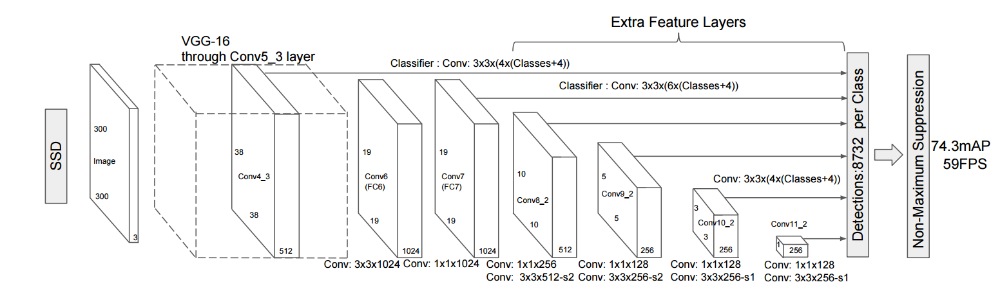
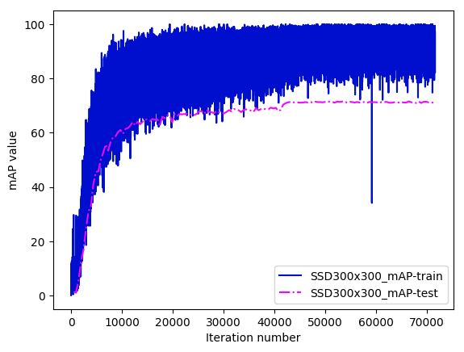

Single Shot MultiBox Detector (SSD) Object Detection
Introduction
Single Shot MultiBox Detector (SSD) is one of the new and enhanced detection algorithms detecting objects in images [ 1 ]. SSD algorithm is characterized by rapid detection and high detection accuracy. PaddlePaddle has an integrated SSD algorithm! This example demonstrates how to use the SSD model in PaddlePaddle for object detection. We first provide a brief introduction to the SSD principle. Then we describe how to train, evaluate and test on the PASCAL VOC data set, and finally on how to use SSD on custom data set.
SSD Architecture
SSD uses a convolutional neural network to achieve end-to-end detection. The term “End-to-end” is used because it uses the input as the original image and the output for the test results, without the use of external tools or processes for feature extraction. One popular model of SSD is VGG16 [ 2 ]. SSD differs from VGG16 network model as in following.
- The final fc6, fc7 full connection layer into a convolution layer, convolution layer parameters through the original fc6, fc7 parameters obtained.
- Change the parameters of the pool5 layer from 2x2-s2 (kernel size 2x2, stride size to 2) to 3x3-s1-p1 (kernel size is 3x3, stride size is 1, padding size is 1).
- The initial layers are composed of conv4_3、conv7、conv8_2、conv9_2、conv10_2, and pool11 layers. The main purpose of the priorbox layer is to generate a series of rectangular candidates based on the input feature map. A more detailed introduction to SSD can be found in the paper[1]。
Below is the overall structure of the model (300x300)

图1. SSD网络结构
Each box in the figure represents a convolution layer, and the last two rectangles represent the summary of each convolution layer output and the post-processing phase. Specifically, the network will output a set of candidate rectangles in the prediction phase. Each rectangle contains two types of information: the position and the category score. The network produces thousands of predictions at various scales and aspect ratios before performing non-maximum suppression, resulting in a handful of final tags.
Example Overview
This example contains the following files:
Table 1. Directory structure
| File | Description |
|---|
| train.py | Training script |
| eval.py | Evaluation |
| infer.py | Prediction using the trained model</tr>
|
| visual.py | Visualization of the test results |
| image_util.py | Image preprocessing required common function |
| data_provider.py | Data processing scripts, generate training, evaluate or detect the required data |
| config/pascal_voc_conf.py | Neural network hyperparameter configuration file |
| data/label_list | Label list |
| data/prepare_voc_data.py | Prepare training PASCAL VOC data list |
</table>
The training phase requires pre-processing of the data, including clipping, sampling, etc. This is done in ```image_util.py``` and ```data_provider.py```.```config/vgg_config.py```. ```data/prepare_voc_data.py``` is used to generate a list of files, including the training set and test set, the need to use the user to download and extract data, the default use of VOC2007 and VOC2012.
## PASCAL VOC Data set
### Data Preparation
First download the data set. VOC2007\[[3](#References)\] contains both training and test data set, and VOC2012\[[4](#References)\] contains only training set. Downloaded data are stored in ```data/VOCdevkit/VOC2007``` and ```data/VOCdevkit/VOC2012```. Next, run ```data/prepare_voc_data.py``` to generate ```trainval.txt``` and ```test.txt```. The relevant function is as following:
```python
def prepare_filelist(devkit_dir, years, output_dir):
trainval_list = []
test_list = []
for year in years:
trainval, test = walk_dir(devkit_dir, year)
trainval_list.extend(trainval)
test_list.extend(test)
random.shuffle(trainval_list)
with open(osp.join(output_dir, 'trainval.txt'), 'w') as ftrainval:
for item in trainval_list:
ftrainval.write(item[0] + ' ' + item[1] + '\n')
with open(osp.join(output_dir, 'test.txt'), 'w') as ftest:
for item in test_list:
ftest.write(item[0] + ' ' + item[1] + '\n')
```
The data in ```trainval.txt``` will look like:
```
VOCdevkit/VOC2007/JPEGImages/000005.jpg VOCdevkit/VOC2007/Annotations/000005.xml
VOCdevkit/VOC2007/JPEGImages/000007.jpg VOCdevkit/VOC2007/Annotations/000007.xml
VOCdevkit/VOC2007/JPEGImages/000009.jpg VOCdevkit/VOC2007/Annotations/000009.xml
```
The first field is the relative path of the image file, and the second field is the relative path of the corresponding label file.
### To Use Pre-trained Model
We also provide a pre-trained model using VGG-16 with good performance. To use the model, download the file http://paddlepaddle.bj.bcebos.com/model_zoo/detection/ssd_model/vgg_model.tar.gz, and place it as ```vgg/vgg_model.tar.gz```。
### Training
Next, run ```python train.py``` to train the model. Note that this example only supports the CUDA GPU environment, and can not be trained using only CPU. This is mainly because the training is very slow using CPU only.
```python
paddle.init(use_gpu=True, trainer_count=4)
data_args = data_provider.Settings(
data_dir='./data',
label_file='label_list',
resize_h=cfg.IMG_HEIGHT,
resize_w=cfg.IMG_WIDTH,
mean_value=[104,117,124])
train(train_file_list='./data/trainval.txt',
dev_file_list='./data/test.txt',
data_args=data_args,
init_model_path='./vgg/vgg_model.tar.gz')
```
Below is a description about this script:
1. Call ```paddle.init``` with 4 GPUs.
2. ```data_provider.Settings()``` is to pass configuration parameters. For ```config/vgg_config.py``` setting，300x300 is a typical configuration for both the accuracy and efficiency. It can be extended to 512x512 by modifying the configuration file.
3. In ```train()```执 function, ```train_file_list``` specifies the training data list, and ```dev_file_list``` specifies the evaluation data list, and ```init_model_path``` specifies the pre-training model location.
4. During the training process will print some log information, each training a batch will output the current number of rounds, the current batch cost and mAP (mean Average Precision. Each training pass will be saved a model to the default saved directory ```checkpoints``` (Need to be created in advance).
The following shows the SDD300x300 in the VOC data set.

图2. SSD300x300 mAP收敛曲线
### Model Assessment
Next, run ```python eval.py``` to evaluate the model.
```python
paddle.init(use_gpu=True, trainer_count=4) # use 4 gpus
data_args = data_provider.Settings(
data_dir='./data',
label_file='label_list',
resize_h=cfg.IMG_HEIGHT,
resize_w=cfg.IMG_WIDTH,
mean_value=[104, 117, 124])
eval(
eval_file_list='./data/test.txt',
batch_size=4,
data_args=data_args,
model_path='models/pass-00000.tar.gz')
```
### Obejct Detection
Run ```python infer.py``` to perform the object detection using the trained model.
```python
infer(
eval_file_list='./data/infer.txt',
save_path='infer.res',
data_args=data_args,
batch_size=4,
model_path='models/pass-00000.tar.gz',
threshold=0.3)
```
Here ```eval_file_list``` specified image path list, ```save_path``` specifies directory to save the prediction result.
```
VOCdevkit/VOC2007/JPEGImages/006936.jpg 12 0.997844 131.255611777 162.271582842 396.475315094 334.0
VOCdevkit/VOC2007/JPEGImages/006936.jpg 14 0.998557 229.160234332 49.5991278887 314.098775387 312.913876176
VOCdevkit/VOC2007/JPEGImages/006936.jpg 14 0.372522 187.543615699 133.727034628 345.647156239 327.448492289
...
```
一共包含4个字段，以tab分割，第一个字段是检测图像路径，第二字段为检测矩形框内类别，第三个字段是置信度，第四个字段是4个坐标值（以空格分割）。
Below is the example after running ```python visual.py``` to visualize the model result. The default visualization of the image saved in the ```./visual_res```.
<img src="images/vis_1.jpg" height=150 width=200 hspace='10'/>
<img src="images/vis_2.jpg" height=150 width=200 hspace='10'/>
<img src="images/vis_3.jpg" height=150 width=100 hspace='10'/>
<img src="images/vis_4.jpg" height=150 width=200 hspace='10'/>
Figure 3. SSD300x300 Visualization Example
## To Use Custo Data set
In PaddlePaddle, using the custom data set to train SSD model is also easy! Just input the format that ```train.txt``` can understand. Below is a recommended structure to input for ```train.txt```.
```
image00000_file_path image00000_annotation_file_path
image00001_file_path image00001_annotation_file_path
image00002_file_path image00002_annotation_file_path
...
```
The first column is for the image file path, and the second column for the corresponding marked data file path. In the case of using xml file format, ```data_provider.py``` can be used to process the data as follows.
```python
bbox_labels = []
root = xml.etree.ElementTree.parse(label_path).getroot()
for object in root.findall('object'):
bbox_sample = []
# start from 1
bbox_sample.append(float(settings.label_list.index(
object.find('name').text)))
bbox = object.find('bndbox')
difficult = float(object.find('difficult').text)
bbox_sample.append(float(bbox.find('xmin').text)/img_width)
bbox_sample.append(float(bbox.find('ymin').text)/img_height)
bbox_sample.append(float(bbox.find('xmax').text)/img_width)
bbox_sample.append(float(bbox.find('ymax').text)/img_height)
bbox_sample.append(difficult)
bbox_labels.append(bbox_sample)
```
Now the marked data（e.g. image00000\_annotation\_file\_path）is as follows:
```
label1 xmin1 ymin1 xmax1 ymax1
label2 xmin2 ymin2 xmax2 ymax2
...
```
Here each row corresponds to an object for 5 fields. The first is for the label (note the background 0, need to be numbered from 1), and the remaining four are for the coordinates.
```
bbox_labels = []
with open(label_path) as flabel:
for line in flabel:
bbox_sample = []
bbox = [float(i) for i in line.strip().split()]
label = bbox[0]
bbox_sample.append(label)
bbox_sample.append(bbox[1]/float(img_width))
bbox_sample.append(bbox[2]/float(img_height))
bbox_sample.append(bbox[3]/float(img_width))
bbox_sample.append(bbox[4]/float(img_height))
bbox_sample.append(0.0)
bbox_labels.append(bbox_sample)
```
Another important thing is to change the size of the image and the size of the object to change the configuration of the network structure. Use ```config/vgg_config.py``` to create the custom configuration file. For more details, please refer to \[[1](#References)\]。
## References
1. Wei Liu, Dragomir Anguelov, Dumitru Erhan, Christian Szegedy, Scott Reed, Cheng-Yang Fu, Alexander C. Berg. [SSD: Single shot multibox detector](https://arxiv.org/abs/1512.02325). European conference on computer vision. Springer, Cham, 2016.
2. Simonyan, Karen, and Andrew Zisserman. [Very deep convolutional networks for large-scale image recognition](https://arxiv.org/abs/1409.1556). arXiv preprint arXiv:1409.1556 (2014).
3. [The PASCAL Visual Object Classes Challenge 2007](http://host.robots.ox.ac.uk/pascal/VOC/voc2007/index.html)
4. [Visual Object Classes Challenge 2012 (VOC2012)](http://host.robots.ox.ac.uk/pascal/VOC/voc2012/index.html)